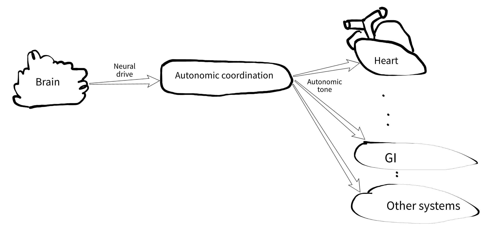
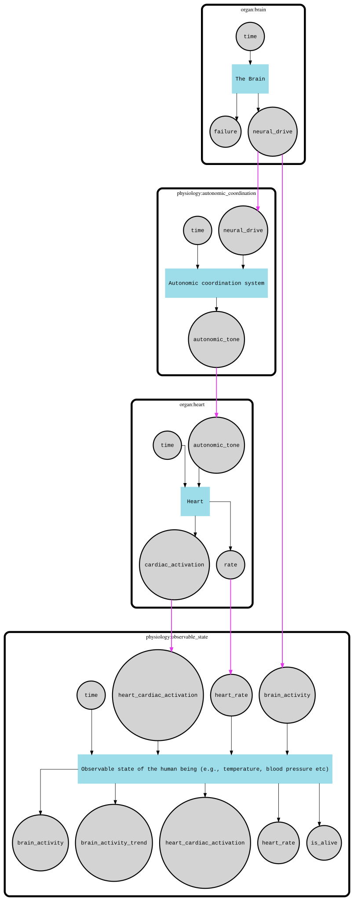

March 18, 2026
Building an Artificial Heart
Welcome to another episode of Human Body Simulation !
In this episode, I want to share some mind-blowing facts about the human body and how surprisingly fun (and challenging) it is to simulate it.
Today, we’ll focus on fundamental aspects of the human body: the brain, the heart, and the autonomic coordination system.
What makes something alive?
Turns out, if you want to simulate life, you first need to understand death.
Medically speaking, a human is considered alive as long as the brain is alive. The heart can stop, breathing can disappear, but if the brain is still producing signals, you're technically still in the game.
Why does this matter? Because my simulation is graph-based. I need a starting node. Something has to kick things off and coordinate everything else.
That "something" is the brain.
Brain as the main driver
The activation flow looks like this:

The brain emits a single continuous signal: the neural drive. As long as that signal exists, the simulated human is considered alive.
I model it as a number between 0.0 and 1.0, with a default around 0.3 plus some jitter. Higher values mean higher arousal, basically representing global sympathetic activity.
Simple? Suspiciously simple.
Of course I added a few extra knobs. For example, a damage level that slowly increases over ~90 years of simulation time, or faster if things go wrong. Once it crosses a threshold… well, the simulation ends. Just like in real life.
Autonomic Coordination
Now we have a brain emitting a nice noisy signal. But that alone would make the system boring and unrealistic.
The neural drive mostly reflects sympathetic activity. But what about the parasympathetic side?
Here comes the autonomic coordination system (ACS).
This isn't a single organ. It's a set of independent pieces of neural structures like spinal cord, adrenal medulla, ganglia, the sinoatrial node, and many others.
One of the most surprising things here: the heart doesn't actually need the brain to beat.
I used to think every muscle required a direct brain command. Turns out, the heart has its own pacemaker, the sinoatrial (SA) node. It happily generates its own rhythm. The brain mostly modulates it, and even filters signals so you don't feel every single heartbeat. (When that filtering fails, it's… not pleasant.)
The ACS takes the neural drive and turns it into a richer signal:
As you can see an autonomic tone signal is just a group of levels and biases. Levels are general for the whole organism, and biases are regional. Biases allow the brain to talk to other organs without direct commands. For example, instead of micromanaging like:
"Hey heart, we're running from a jaguar, increase BPM please."
the brain just increases sympathetic level and cardiac bias. More realistic, more chaotic, and honestly more fun to simulate.
The Heart
With the nervous system in place, I finally get to the star of the show.
Quick note: I build everything using TDD. Not because I enjoy writing tests (I don't), but because without them this project would collapse into a pile of "it kinda works, I think."
So instead of randomly picking the next organ to implement, I asked:
What should I observe in a living human?
Answer: heart contractions.
That's how the heart made it into the simulation. So I started with a test:
How the heart model works
The heart has no direct connection to the brain. It only listens to two inputs: time (from environment) and autonomic tone (from ACS)
- Time drives the pacemaker (baseline rhythm)
- Autonomic tone adjusts the heart rate (BPM)
See this partial graph showing the brain has no connections to the heart. Click it, it is SVG, so you can zoom in and explore without losing the quality.

Important detail: contraction depends only on time, not on autonomic input.
So even if the brain goes offline, the heart keeps beating for a while (such a state is called denervation).
Making it visible
Now for the coolest part: I wanted an ECG-style diagram - the most intuitive way to visualize the “vitality” of a simulated human. To achieve this, the heart tracks its contraction phase and emits a corresponding waveform. For now, I’m using a basic phase-based curve. But this can be made highly realistic—for example, by using the McSharry dynamic model, which generates ECG signals from a parameterized system (typically 15–17 parameters).
And yes, the UI will be entirely in the terminal (even the diagrams). Because somehow TUIs are sexy again, at least among vibecoders.
What's next
The next logical step is breathing.
Same guiding question:
What else should I observe in a living human?
Answer: lungs doing their thing.
So next up, I'll try to bring some basic breathing mechanics into the picture.
That's it for now.
The source code of this and many other FMesh is available on GitHub.
Make simulations, not war!